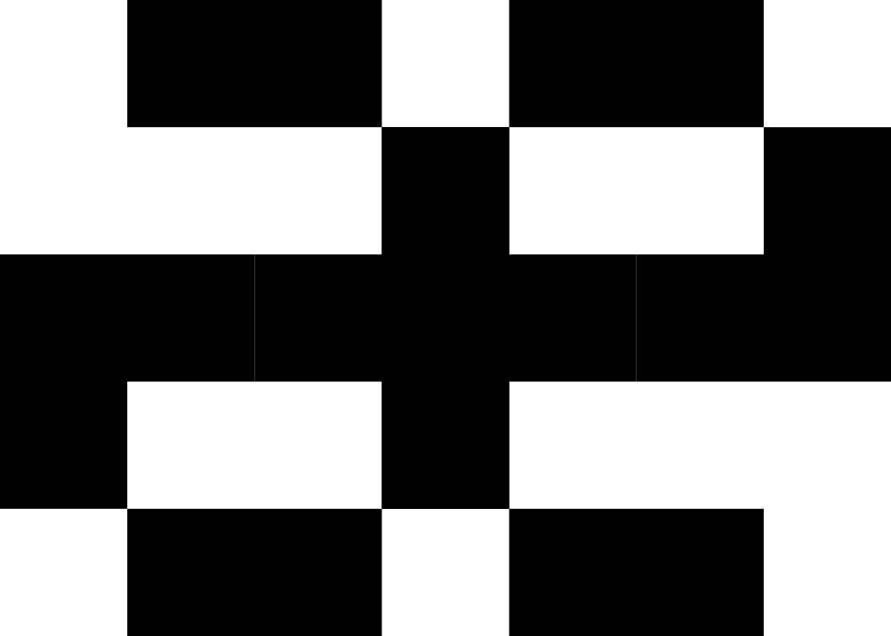

Aether 架构图
实线 = 执行/数据链路 虚线 = 逻辑调用
缩小 -
放大 +
重置
打印 / PDF
1. Aether Kernel 计算内核
libae.so
↓
Spatial Grid
Archetypeless ECS
Pyraman Event Timing
Ringbuf / Eventfd / MemArena
2. AE Server 服务层
AE Server
↓
ST UDP Gateway
AS Aether Sphinx
AP Aether Pyramid
API and Protocol
5. 运维工具
数据导入
监控告警与日志
3. 独立扩展工具集
AVA 可视化扩展
AVA 调度与渲染中枢
Cairo 2D
Vulkan 3D
Gaussian Splatting
Visual Debug Tools
空间分析扩展
空间分析调度与计算中枢
离散格网计算域
经典空间计算域
时空知识图谱域
AE-EXT 客户端扩展
AE-EXT 协议转换中枢
Cesium
ArcGIS
QGIS
OSGB
4. AI 扩展
MCP
外部模型 LLM
Skills